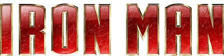

Tony Stark is arrogant in every MCU movie; it's a key part of his character. In fact lots of male MCU
protagonists are arrogant (i.e. Star Lord and Dr Strange as well as Stark).
Tony Stark is arrogant because he is, and has been for all of his life, incredibly, incredibly rich. That makes
you believe that you can do anything (or at least, get anything done for you) because, usually, you can do
anything with enough money.
Secondly, Stark is an exceptional inventor/mechanic. That's clear from the fact that he was able to make the
first Iron Man suit almost solo (only had a little help from Yinsen), not to mention that he was trapped in a
cave with only a bunch of scrap to work with [this happens during the first part of the Iron Man movie]. This
would also bolster anyone's self-esteem: even without his money, Tony could still make a good livelihood and
possibly start up a new company using his skill and a bit of innovation, should Stark Industries fail (which is
extremely unlikely).
Stark's heroic successes as Iron Man also probably improved his opinion of his own awesomeness. (This may have
been part of the reason for him revealing to the world his secret identity at the end of the first Iron Man
film.)
paragraph's info is from iron
man wiki
!

Iron Man possesses powered armor that gives him superhuman strength and durability, flight, and an array of
weapons. The armor is invented and worn by Stark (with occasional short-term exceptions). Other people who have
assumed the Iron Man identity include Stark's long-time partner and best friend James Rhodes; close associates
Harold "Happy" Hogan; Eddie March; and (briefly) Michael O'Brien.
The weapons systems of the suit have changed over the years, but Iron Man's standard offensive weapons have
always been the repulsor rays that are fired from the palms of his gauntlets. Other weapons built into various
incarnations of the armor include: the uni-beam projector in its chest; pulse bolts (that pick up kinetic energy
along the way; so the farther they travel, the harder they hit); an electromagnetic pulse generator; and a
defensive energy shield that can be extended up to 360 degrees. Other capabilities include: generating
ultra-freon (i.e., a freeze-beam); creating and manipulating magnetic fields; emitting sonic blasts; and
projecting 3-dimensional holograms (to create decoys).
In addition to the general-purpose model he wears, Stark has developed several specialized suits for space
travel, deep-sea diving, stealth, and other special purposes. Stark has modified suits, like the Hulkbuster
heavy armor. The Hulkbuster armor is composed of add-ons to his so-called modular armor, designed to enhance its
strength and durability enough to engage the Incredible Hulk in a fight. A later model, designed for use against
Thor, is modeled on the Destroyer and uses a mystical power source. Stark develops an electronics pack during
the Armor Wars that, when attached to armors that use Stark technologies, will burn out those components,
rendering the suit useless. This pack is ineffective on later models. While it is typically associated with
James Rhodes, the War-Machine armor began as one of Stark's specialty armors.
The most recent models of Stark's armor, beginning with the Extremis Armor, are now stored in the hollow
portions of Stark's bones, and the personal area networking implement used to control it is implanted in his
forearm, and connected directly to his central nervous system.
The Extremis has since been removed, and he now uses more conventional armors. Some armors still take a liquid
form, but are not stored within his body. His Endo-Sym Armor incorporates a combination of the liquid
smart-metal with the alien Venom symbiote, psionically controlled by Stark.
Post-Secret Wars, Stark uses a more streamlined suit of armor that can practically 'morph' into other armors or
weapons.
paragraph's info is from iron
man wiki
!